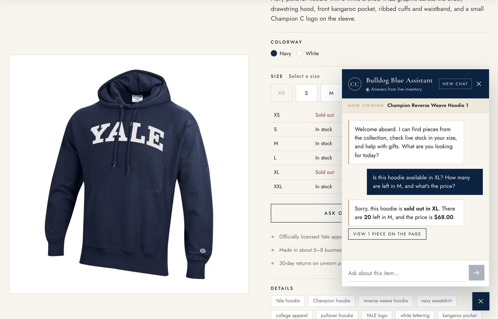
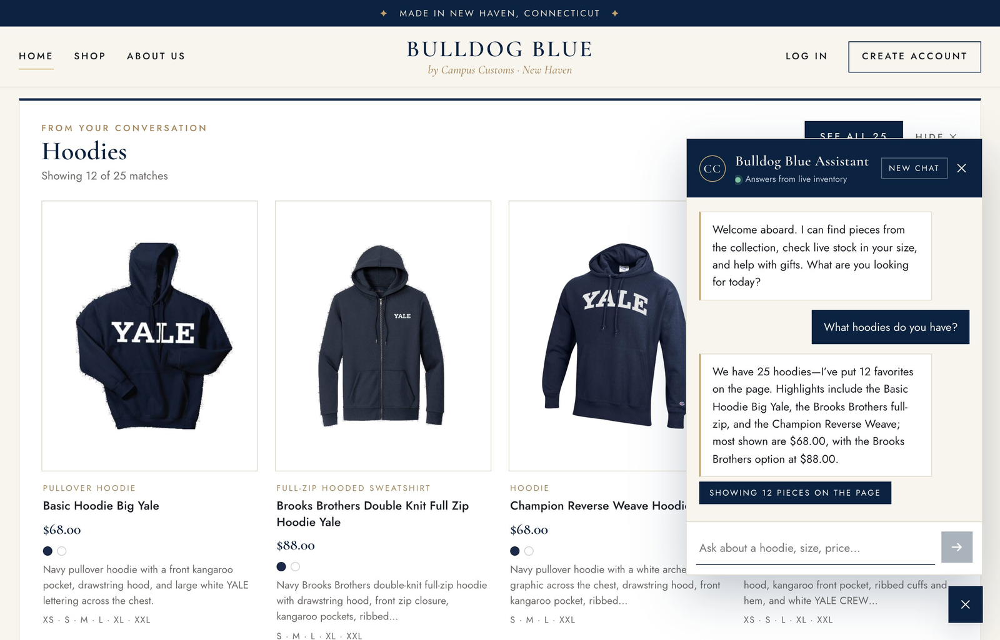
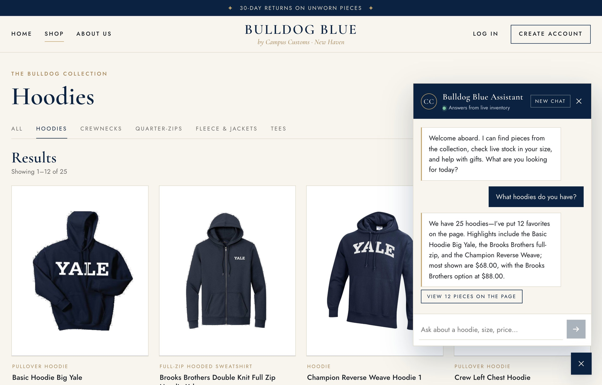
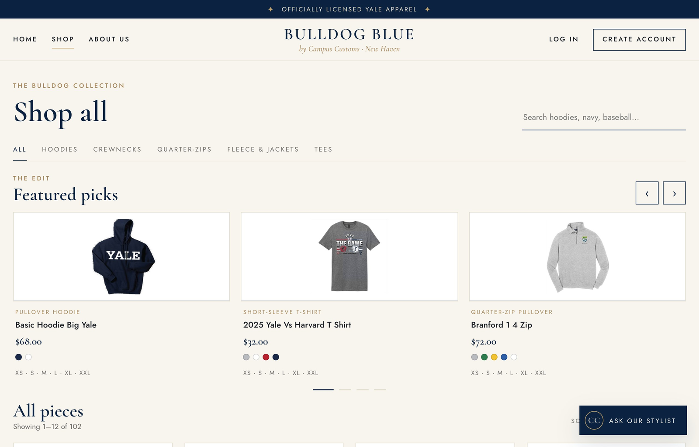
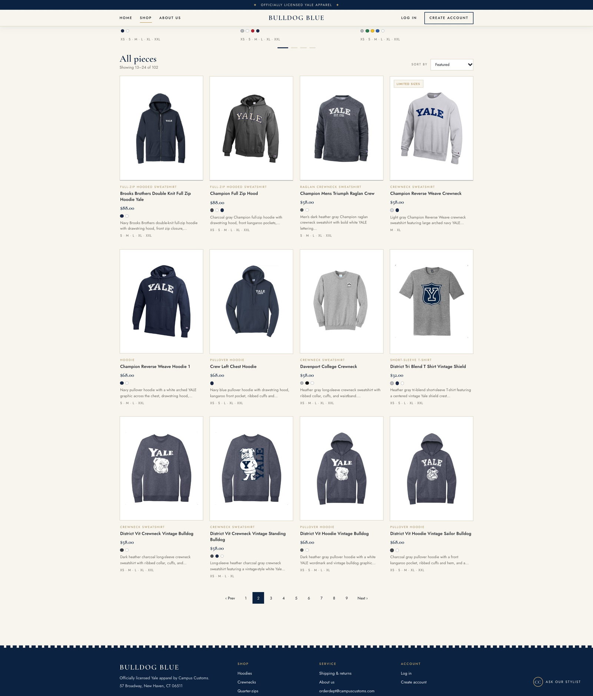

Check 1: Chat checks an item's inventory level PASS

On the Champion Reverse Weave Hoodie 1 page, I asked: "Is this hoodie available in XL? How many are left in M, and what's the price?" The chat replied: "Sorry, this hoodie is sold out in XL. There are 20 left in M, and the price is $68.00."
What this proves: the chat answers stock and price from the database, not from guesses.
Every fact matches campus_customs.db (XL = 0, M = 20, price = 68.0), and the page's own stock table next to it also shows XL as sold out.
Check 2: Category question shows product cards PASS

I asked "What hoodies do you have?" A "Hoodies" panel with 12 product cards (image, name, price, colors and sizes) appeared on the page, with "Showing 12 of 25 matches" and a "See all 25" button.
What this proves: the agent's search results reach the website as real product cards (the chat-to-page contract). The counts and prices match the database: 25 hoodies, and the 12 shown are $68.00 except the Brooks Brothers at $88.00.

Clicking "See all 25" opens the Products page filtered to the same search: "Showing 1–12 of 25".
What this proves: the "See all" link repeats the agent's exact search, so the chat and the shop always agree on what matches.
Check 3: Problem 9 feature: carousel + 12-per-page grid PASS

The Shop page opens with a "Featured picks" carousel showing 3 products at a time, with arrows and dots to move through the rest.
What this proves: shoppers see products immediately, without scrolling (usability improvement F1).

Below the carousel, all 102 products are shown 12 at a time. This is page 2: "Showing 13–24 of 102", 3 rows of 4 cards, and page numbers 1–9 with 2 highlighted.
What this proves: the catalogue is broken into easy-to-scan pages that you click through (1, 2, 3…), and the page number is kept in the URL (?page=2).